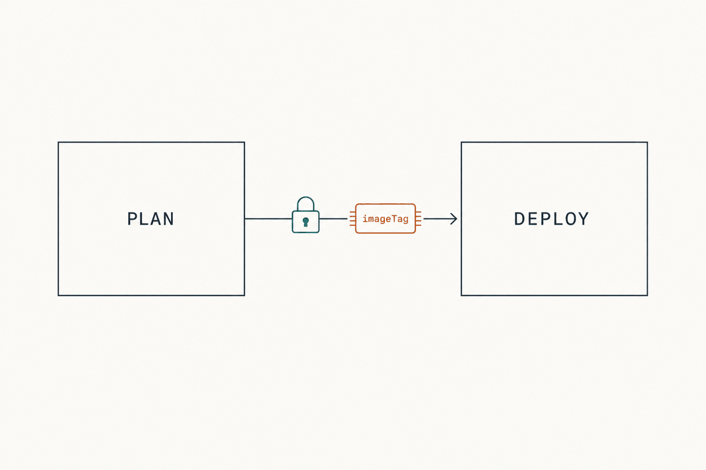
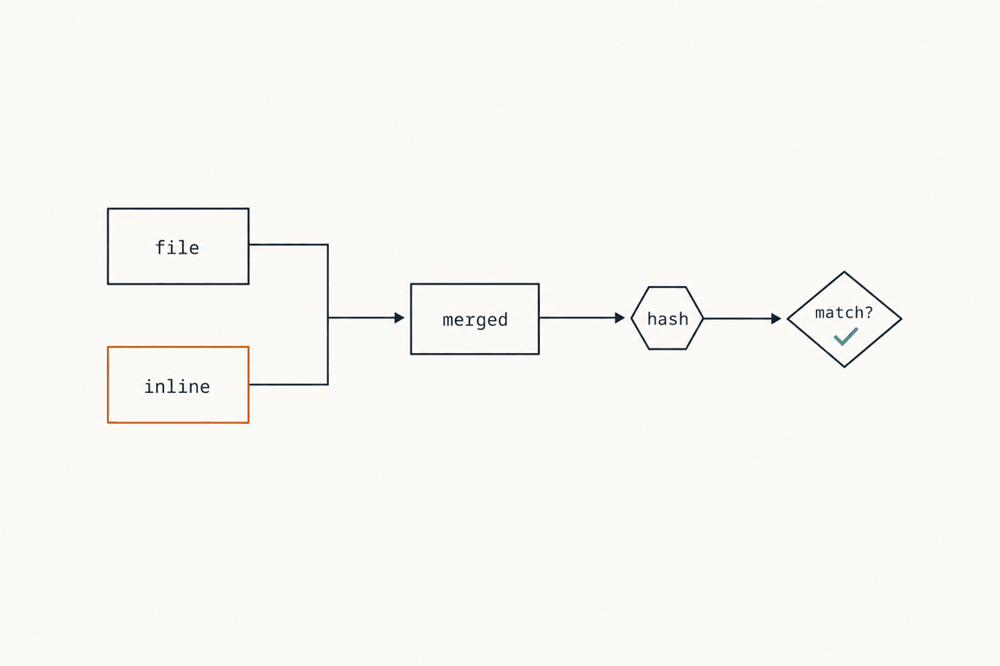

Plan: Inline parameters, recorded in the plan and enforced at deploy

Purpose
Add a parameters input to the plan and deploy actions, GitHub and Azure DevOps, so values that change on every run (an image tag, a build number, a commit hash) can be supplied without editing a file. Inline values win over the parameters file, work for classic and stack deployments, and are part of the plan/deploy contract: the plan records them, the deploy refuses to run if it receives different ones, and a secure value never reaches a log, a comment, an artifact or a summary file.
Design decisions and the alternatives that were rejected are in the ADR: docs/adr/0006-inline-parameters.md. This plan is the build sequence.
Problem
Today parameters come only from template_parameters (IN_TEMPLATE_PARAMS): a file, or the file followed by KEY=VALUE pairs. The pairs reach az as one string on the command line (scripts/az-deploy.sh:561-563), which is echoed in the Run: line (:584) and evaled (:585), so any secret in it is in the log and in argv. The pairs are not part of what the plan records, so a deploy can use different values than the plan showed. The deploy does not reuse any plan artifact: it recompiles from the checkout. The only things the plan hands to the deploy are bicep_version and stack_settings.
Solution
A new script scripts/inline-parameters.sh, called by az-deploy.sh and azure-cost.sh only when inline parameters are in play. It parses the input, finds each parameter's type in the compiled template, marks securestring and secureObject as secure, masks those values, and writes one merged parameters file (mode 600, runner temp directory, outside the logs folder). az-deploy.sh then passes --parameters <that file>, so no value is on a command line. In the what-if step the script also emits a record, one salted SHA-256 per inline parameter, as the new output inline_parameters. The deploy receives it as plan_inline_parameters, hashes its own values with the plan's salt, and fails on any difference, naming parameters, never values. With parameters empty nothing changes.

What was verified before writing this plan
- Azure CLI 2.87.0,
custom.py: a.bicepparamcan be combined withkey=valueitems (no JSON object), implemented by passing them to Bicep asBICEP_PARAMETERS_OVERRIDES, minimum Bicep 0.22.6. The stack commands use the same code path. - Bicep 0.37.4, run locally:
BICEP_PARAMETERS_OVERRIDES='{"tag":"t"}' az bicep build-params --file x.bicepparam --stdoutoverrides assigned values, supplies required parameters the file does not assign (without it:BCP258), adds parameters that have defaults, and fails withBCP259for a name the template does not declare. Asecurestringcan be overridden. The--stdoutoutput holds bothparametersJsonandtemplateJson. - az does the type coercion for
key=valueitself (_try_parse_key_value_object): string and securestring stay strings,int,bool, JSON for array, object and secureObject. The new script must reproduce that, because it builds the JSON itself.
Relevant Files
Existing Files
- existing
scripts/az-deploy.sh— builds every az command; parameters at:235-253(URL download),:256(Bicep selection),:378-381(stack),:561-563(classic); plan-setting checks at:306-325and:541-551;write_summaryat:167; EXIT trapcleanupat:17. - existing
scripts/azure-cost.sh— passes--inline k=vat:185-191. - existing
scripts/az-bicep.sh— compiles.bicepparamand copies the result into the logs artifact (:125-135); left unchanged, noted in the docs. - existing
scripts/debug-info.sh,scripts/pipeline-summary.sh— printIN_*variables and the parameters string (:69,:196;:40-41). - existing
scripts/pr-comment.sh— posts everystep_*.mdin name order (:46); no change needed. - existing
.github/actions/plan/action.yml,.github/actions/deploy/action.yml— inputs, step env, outputs. - existing
.azuredevops/templates/plan-stage.yml,.azuredevops/templates/deploy-stage.yml,.azuredevops/ms.azure.deploy.yml— script download lists, step env, plan outputs,PLAN_STACK_SETTINGSwiring (deploy-stage.yml:71-73,ms.azure.deploy.yml:291-294). - existing
docs/configuration.md(:43-49settings table,:115-121,:164,:254-262,:281),docs/how-it-works.md(:55-80,:96-106,:269),docs/troubleshooting.md(:53),docs/examples/**,.azuredevops/README.md.
New Files
- new
scripts/inline-parameters.sh— parse, type, mask, merge, record, compare, comment section. - new
tests/inline-parameters.test.sh— plain bash harness, needs onlybash,jq,perl,azwith Bicep; no Azure login. - new
tests/fixtures/inline/main.bicep,main.bicepparam,params.json— fixture template with string, int, bool, object,@secure()string and@secure()object parameters. - new
tests/bin/az— a shim that runs the realaz bicep ...and records any otherazcall, soaz-deploy.shcan run without Azure.
Implementation Phases
IMPORTANT: Execute every phase and task step by step, in order, top to bottom.
Status markers: [] idle · [wip] in progress · [x] complete · [f] failed. All start as []; the Build Plan workflow updates them as it works.
[] Phase 1: The resolver script
Build scripts/inline-parameters.sh and its test harness first, with no wiring. It is a child process, not a sourced library, on purpose: az-deploy.sh has an ERR trap that prints $BASH_COMMAND and runs eval echo on it (:9, :65). A failing command that holds a secret in a variable would print it. The script has its own trap that prints a fixed message and never the command, and keeps values out of argv (jq reads them from stdin or files, never --arg).
1. Contract
| Environment | Meaning |
|---|---|
INLINE_PARAMETERS | The raw input. Never printed. |
PLAN_INLINE_PARAMETERS | The plan's record. A value containing $( (an unresolved Azure DevOps macro) counts as empty, like PLAN_STACK_SETTINGS at az-deploy.sh:317. |
INLINE_ACTION | validate, what-if, create or cost. Only what-if makes a record; only create compares; what-if and create write the comment section. |
IN_TEMPLATE, IN_TEMPLATE_PARAMS | As the caller resolved them (downloaded file names). The first token of IN_TEMPLATE_PARAMS is the base file; any = token after it is a legacy pair and is an error when INLINE_PARAMETERS is set. |
OUT_DIR | A mktemp -d directory made by the caller, removed by the caller. Receives parameters.json, typed.json, secrets.list. |
LOG_PATH | Receives step_a0_inline_parameters.md and inline-parameters.json (what-if and create only). |
Exit 0: OUT_DIR/parameters.json exists when inline values are set; nothing is written when both inputs are empty. Exit 1: a fixed error line on stdout as an annotation, the same text in the Markdown file, no values anywhere.
#!/usr/bin/env bash
set +x
umask 077
trap 'echo "::error::inline-parameters failed (line $LINENO)"' ERR # Azure DevOps: ##[error]
# never "set -e" the whole script with BASH_COMMAND in the message; check each step
fail() { annotate "$1"; write_md ":x: $1"; exit 1; }
annotate() { if test -n "${TF_BUILD-}"; then echo "##[error]$1"; else echo "::error::$1"; fi; }[]Createscripts/inline-parameters.shwith the header used by the other scripts (copyright,SPDX-License-Identifier: BSD-3-Clause), the contract above,chmod +x.[]Return at once, silently, whenINLINE_PARAMETERSis empty and not (INLINE_ACTION=createand a usablePLAN_INLINE_PARAMETERS). That keeps the default path unchanged.
2. Parse the input
First non-space character {: JSON object. Otherwise lines of name=value; blank lines and lines starting with # are skipped; the name must match ^[A-Za-z_][A-Za-z0-9_]*$; the value is everything after the first = with a trailing \r removed. Duplicate names are an error. A JSON array, a scalar, or a value wrapped as {"value": ...} at the top level is not accepted: the form is name to value, as in the issue. Write raw.json as {name: {line: true|false, v: <string|json>}} into OUT_DIR.
# jq_in=(-Rs) for the line form (read the text as one string), jq_in=() for the JSON form
printf '%s' "${INLINE_PARAMETERS}" | jq "${jq_in[@]}" -c --argjson isjson "$is_json" '
if $isjson then (if type == "object" then with_entries(.value |= {line: false, v: .}) else error("shape") end)
else split("\n") | map(sub("\r$"; "")) | map(select(length > 0 and (startswith("#") | not)))
| map(capture("^(?<k>[A-Za-z_][A-Za-z0-9_]*)=(?<v>(?s:.*))$") // error("line"))
| (group_by(.k) | map(select(length > 1)) | if length > 0 then error("dup") else . end) as $_
| map({(.k): {line: true, v: .v}}) | add // {}
end' > "${OUT_DIR}/raw.json" 2>/dev/null || fail "The parameters input is not a JSON object or name=value lines."jq's own messages can quote the input, so stderr is discarded and the message above is fixed. Shell redirection of stdin does not put the value on argv.
[]Implement the parser as above; both forms; the duplicate, name-syntax and shape errors; an empty object{}counts as "no inline values".
3. Find the types and coerce
The types always come from IN_TEMPLATE alone, not from the .bicepparam (line values need the types before the overrides for the compile in task 5 can be built): a .bicep file is compiled with az bicep build --file "$IN_TEMPLATE" --stdout --only-show-errors (the Bicep version is already selected by the caller); a .json file is read; a template spec ID uses az ts show --template-spec "$IN_TEMPLATE" --query mainTemplate -o json. If none of these gives JSON with a parameters object, the template is "unknown": every inline value is treated as secure, line values are kept as strings, and the comment says so.
def rtype($t; $n):
($t.parameters[$n] // null) as $p
| if $p == null then null
else (if ($p | has("$ref"))
then ($t.definitions[($p["$ref"] | ltrimstr("#/definitions/"))] // {})
else $p end).type // "unknown"
end;
def coerce($ty; $line; $v):
($ty | ascii_downcase) as $t
| try (
if $line then
if $t == "string" or $t == "securestring" then $v
elif $t == "int" then ($v | tonumber | if . == floor then . else error("t") end)
elif $t == "bool" then ($v | ascii_downcase | if . == "true" then true elif . == "false" then false else error("t") end)
elif $t == "array" then ($v | fromjson | if type == "array" then . else error("t") end)
elif $t == "object" or $t == "secureobject" then ($v | fromjson | if type == "object" then . else error("t") end)
else $v end
else
if ($t == "string" or $t == "securestring") and ($v | type) == "string" then $v
elif $t == "int" and ($v | type) == "number" and $v == ($v | floor) then $v
elif $t == "bool" and ($v | type) == "boolean" then $v
elif $t == "array" and ($v | type) == "array" then $v
elif ($t == "object" or $t == "secureobject") and ($v | type) == "object" then $v
elif $t == "unknown" then $v
else error("t") end
end
) catch {"__err": ("expected " + $t)};Run it as a jq program that reads raw.json and a types.json ({name: type}, made from the template with rtype), and writes typed.json ({name: typedValue}) and names.json ({name: {secure: bool, type}}). Any __err, and any name whose type is null (not declared by the template), is collected as name: reason and the script fails with those lines. Names and expected types are not secrets; values are never in the message.
[]Implement template loading for.bicep,.json, template spec and the "unknown" fallback, with the Bicep-missing case giving a fixed message.[]Implementrtype(including$ref) andcoerce; secure means type lower-cased issecurestringorsecureobject, or the template is unknown.[]Collect all errors before failing, so one run reports every bad parameter.
4. Mask and prepare the scrub list
Before anything else uses the values, emit mask commands for every secure value, then write secrets.list (NUL separated) for the caller's scrub. For a string: the value, its JSON-escaped form (tojson | .[1:-1], because az prints JSON), and each non-empty line. For a secureObject: the compact JSON and every string leaf of four or more characters.
mask() { # stdin: one value per line (a line of a multi-line value is its own mask)
while IFS= read -r line; do
test -z "$line" && continue
if test -n "${TF_BUILD-}"; then echo "##vso[task.setsecret]${line}"; else echo "::add-mask::${line}"; fi
done
}
jq -r --slurpfile n "${OUT_DIR}/names.json" '
to_entries[] | select($n[0][.key].secure) | .value
| if type == "string" then ., tojson[1:-1] else (tojson), ([.. | strings | select(length >= 4)][]) end' \
"${OUT_DIR}/typed.json" | mask
jq -j '... same selection ... | (., "\u0000")' "${OUT_DIR}/typed.json" > "${OUT_DIR}/secrets.list"mask reads values from a pipe, so nothing is in argv; the echo is a shell builtin. The runner masks the stdout of the step, which includes the child's.
[]Implementmaskfor GitHub (::add-mask::) and Azure DevOps (##vso[task.setsecret]) andsecrets.list.[]Addscrub_file <list> <file>, used by the callers (see phase 2):LIST="$1" perl -0777 -i -pe 'BEGIN{ open(my $f,"<",$ENV{LIST}) or exit; local $/="\0"; @s = sort { length($b) <=> length($a) } grep { length } map { chomp; $_ } <$f> } for my $s (@s) { s/\Q$s\E/[redacted]/g }' "$2". The marker is[redacted], not asterisks, because Azure DevOps colours a run of three asterisks in a diff block as a comment (az-deploy.sh:11-16).
5. Merge into one parameters file
# base = first token of IN_TEMPLATE_PARAMS (may be empty)
# wrap = { "name": { "value": typed } }
wrap=$(jq 'with_entries(.value |= {value: .})' "${OUT_DIR}/typed.json")
case "${base}" in
*.bicepparam)
# Bicep applies the overrides: required parameters missing from the file are supplied (BCP258 otherwise)
BICEP_PARAMETERS_OVERRIDES="$(cat "${OUT_DIR}/typed.json")" \
az bicep build-params --file "${base}" --stdout --only-show-errors 2>"${OUT_DIR}/err" \
| jq -r '.parametersJson' > "${OUT_DIR}/base.json" || fail "Unable to compile ${base} with the inline parameters. ..."
;;
*.json) cp "${base}" "${OUT_DIR}/base.json" ;;
'') echo '{"$schema":"https://schema.management.azure.com/schemas/2019-04-01/deploymentParameters.json#","contentVersion":"1.0.0.0","parameters":{}}' > "${OUT_DIR}/base.json" ;;
esac
# inline wins again, whatever the base was; a file may wrap values in "parameters"
jq --argjson w "${wrap}" '(.parameters // .) as $p | {"$schema": (."$schema" // "https://schema.management.azure.com/schemas/2019-04-01/deploymentParameters.json#"), contentVersion: (.contentVersion // "1.0.0.0"), parameters: ($p + $w)}' \
"${OUT_DIR}/base.json" > "${OUT_DIR}/parameters.json"Notes. --argjson w "${wrap}" would put values on argv: write wrap to a file and use --slurpfile instead. The compile errors of Bicep (BCP codes, file and line) can be shown, but the stderr file is first passed through scrub with secrets.list (a Bicep error can quote a value). Key Vault references in a base JSON file are kept as they are. using none and registry using targets are whatever az bicep build-params supports; if it fails the message suggests a JSON parameters file.
[]Implement the merge for.bicepparam, JSON file, no file. Use--slurpfile, not--argjson, for values.[]Reject legacyKEY=VALUEtokens inIN_TEMPLATE_PARAMSwhenINLINE_PARAMETERSis set: "Move the KEY=VALUE pairs from template_parameters into parameters."[]Check the Bicep version is 0.22.6 or later when the base is a.bicepparamand say so if not (az bicep version).
6. Record, compare, outputs, comment section
hash() { sha256sum 2>/dev/null || shasum -a 256; }
# $1 = salt. Prints {"name":"hex",...}. The value goes through a pipe, not argv.
hashes() {
local n h out='{}'
for n in $(jq -r 'keys[]' "${OUT_DIR}/typed.json"); do # names are validated: safe to word-split
h=$(jq -cS --arg n "$n" '.[$n]' "${OUT_DIR}/typed.json" | { printf '%s|%s|' "$1" "$n"; cat; } | hash | cut -d' ' -f1)
out=$(jq -c --arg n "$n" --arg h "$h" '. + {($n): $h}' <<< "$out")
done
printf '%s' "$out"
}
# what-if: salt=$(openssl rand -hex 8 2>/dev/null || od -An -N8 -tx1 /dev/urandom | tr -d ' \n')
record=$(jq -cn --arg s "$salt" --argjson p "$(hashes "$salt")" '{v: 1, salt: $s, params: $p}')
echo "inline_parameters=${record}" >> "${GITHUB_OUTPUT:-/dev/null}" # Azure DevOps: ##vso[task.setvariable variable=inline_parameters;isOutput=true]
# create: salt from the plan, then compare per name
planned=$(jq -c . <<< "${PLAN_INLINE_PARAMETERS}") # v must be 1
current=$(hashes "$(jq -r .salt <<< "$planned")")
jq -n --argjson p "$planned" --argjson c "$current" '
{changed: [$c | keys[] | select($p.params[.] != null and $p.params[.] != $c[.])],
added: [$c | keys[] | select($p.params[.] == null)],
removed: [$p.params | keys[] | select($c[.] == null)]}'Outcomes at create: both empty, return silently; inline values and no plan record: The deployment has inline parameters (names) but the plan has no record of any. Pass the plan's inline_parameters output (plan_inline_parameters).; a plan record and no inline values: The plan used inline parameters (names) but this deployment has none.; otherwise any of changed, added, removed non-empty fails with the three lists. The plan's record carries hashes only, so for the "plan record and no inline values" message the names come from the record keys.
Comment section step_a0_inline_parameters.md, at what-if and create:
## Inline parameters
These values were applied over the parameters file. At deploy they must match the plan.
| Parameter | Value |
|---|---|
| `imageTag` | `1.4.2` |
| `replicas` | `3` |
| `adminPassword` | secure, hidden |Values are rendered with the pipe character escaped, newlines shown as ⏎, and cut at 200 characters with the original length noted. inline-parameters.json in LOG_PATH: {"schemaVersion":1,"parameters":[{"name":"imageTag","secure":false,"value":"1.4.2"},{"name":"adminPassword","secure":true}]}, no value for a secure one. Never write typed.json, parameters.json or secrets.list outside OUT_DIR.
[]Implementhashes, the record, the three comparison failures, and the success path that printsInline parameters match the plan (N).[]Write the comment section andinline-parameters.jsonforwhat-ifandcreateonly.[]Handlevother than 1 in the plan record with a fixed message ("made by a different version of bicep-action").
7. Testing Strategy
A plain bash harness, tests/inline-parameters.test.sh, that creates a temp directory per case, copies tests/fixtures/inline/* in, sets the environment from the contract, runs the script, and asserts on files and on captured stdout/stderr. The fixture template declares: name (string, in the file), tag (string, required, not in the file), count (int), enabled (bool), tags (object), adminPassword (@secure() string, default none), conn (@secure() object), plus one parameter of a user-defined @secure() type to cover $ref. No Azure login is needed: the script only calls az bicep.
Edge cases: a numeric-looking string for a string parameter (1234 must stay a string in line form, and be rejected as a number in JSON form); a value with ", \, $, a backtick, a space, a newline and a non-ASCII character; an empty string; a name the template does not declare; a duplicate name; unknown template (template spec path stubbed to fail); legacy pair together with parameters.
[]shellcheck -x scripts/inline-parameters.sh tests/inline-parameters.test.sh— no warnings.[]bash tests/inline-parameters.test.sh parse— both input forms, typing per parameter type, every error case; assertstyped.json.[]bash tests/inline-parameters.test.sh merge—.bicepparamwith a required parameter supplied only inline compiles; inline beats the file; the JSON-file base; no base; the result is valid forjq -e '.parameters | type == "object"'.[]bash tests/inline-parameters.test.sh secrets— with the awkward secret from the edge cases: no line of the script's stdout and stderr other than::add-mask::/##vso[task.setsecret]lines contains it (raw or JSON-escaped); neither does any file inLOG_PATH;scrub_fileremoves it from a file that does contain it.[]bash tests/inline-parameters.test.sh record— what-if gives a record with one hash per name and no value; a create with the same values passes; one changed value, one added, one removed, an empty deploy, an empty plan record, and an unresolved$(...)record each give the specified outcome, and the failure text names parameters and contains no value.
[] Phase 2: Wire the scripts
Call the resolver from az-deploy.sh and azure-cost.sh, replace the parameters argument with the merged file, scrub on exit, and keep everything else byte-identical when parameters is empty.
1. scripts/az-deploy.sh
Insert after the subscription selection (after line 285) and before the stack block (line 286). That is after the Bicep CLI has been selected (:256-269, which needs the original IN_TEMPLATE_PARAMS to see a .bicepparam) and after the parameters URL has been downloaded (:235-253).
# Inline parameters (see inline-parameters.sh). With none set and no plan record, nothing here runs.
if test -n "${INLINE_PARAMETERS-}" || \
{ [ "${SCRIPT_ACTION}" = 'create' ] && test -n "${PLAN_INLINE_PARAMETERS-}" && [[ "${PLAN_INLINE_PARAMETERS}" != *'$('* ]]; }; then
inline_dir=$(mktemp -d "${RUNNER_TEMP:-${AGENT_TEMPDIRECTORY:-${TMPDIR:-/tmp}}}/inline-parameters.XXXXXX")
if INLINE_ACTION="${SCRIPT_ACTION}" OUT_DIR="${inline_dir}" \
"$(dirname "${BASH_SOURCE[0]}")/inline-parameters.sh"; then
if test -f "${inline_dir}/parameters.json"; then
IN_TEMPLATE_PARAMS="${inline_dir}/parameters.json"
fi
else
exit 1 # in an if, so the ERR trap does not overwrite the Markdown the script wrote
fi
fiAlso: set inline_dir='' near the top, before the traps. Extend cleanup() (:17) to scrub then remove:
if test -n "${inline_dir-}" && test -d "${inline_dir}"; then
if test -f "${inline_dir}/secrets.list"; then
for f in "${LOG_PATH}/step_${LOG_ORDER}_${LOG_NAME}."* "${summary_file}"; do
test -f "$f" && scrub_file "${inline_dir}/secrets.list" "$f"
done
fi
rm -rf "${inline_dir}"
fiscrub_file moves to a small sourced helper or is duplicated in az-deploy.sh and azure-cost.sh; prefer one definition in inline-parameters.sh reachable as inline-parameters.sh scrub <list> <file> so there is one copy. The classic --parameters line (:561-563) and the stack read -ra (:378-381) need no change: the string is now one path with no spaces, unless the temp directory has spaces, so quote it: change cmd+=" --parameters ${IN_TEMPLATE_PARAMS}" to keep the original unquoted form for the legacy path and use printf '%q' only for the merged path.
whatif-summary.json gets an additive field inlineParameters: null, or {"names": [...], "secure": [...]} read from ${LOG_PATH}/inline-parameters.json (no values). In write_summary (:167-210) add --slurpfile-free reading: inline=$(jq -c 'select(.schemaVersion==1) | {names: [.parameters[].name], secure: [.parameters[] | select(.secure) | .name]}' "${LOG_PATH}/inline-parameters.json" 2>/dev/null || echo null) and --argjson inline "${inline:-null}"; schemaVersion stays 1 because the change is additive. docs/how-it-works.md:269 documents it.
[]Add the block, theinline_dirinitialisation and thecleanup()change inscripts/az-deploy.sh.[]Add theinlineParametersfield towrite_summaryand its two callers (:480-487,:607-611).[]Confirm theRun:line (:584) and the stackRun:lines show only the merged file path when inline values are set, and are unchanged otherwise.
2. scripts/azure-cost.sh
At :182-191, when INLINE_PARAMETERS is set, replace the two branches: call the resolver with INLINE_ACTION=cost, and pass --parameters "${inline_dir}/parameters.json" to the estimator. Skip --inline (secrets on argv) and the compiled TEMPLATE_PARAMS_FILE. Use the existing fail helper on error and the same scrub-and-remove on exit. The cost step needs INLINE_PARAMETERS in its environment (phases 3 and 4).
[]Editscripts/azure-cost.sh: resolver call,--parametersmerged file, scrub and remove on exit.
3. Keep it out of the debug output
[]scripts/debug-info.sh:196: addgrep -v -E '^(INLINE_|PLAN_INLINE_)'to the filter. The variable nameINLINE_PARAMETERSalready does not match^IN_, so this is a second guard; Azure DevOps puts every pipeline variable in the environment of every task.[]scripts/pipeline-summary.sh:40-41: printInline parameters: set (names only)fromINLINE_PARAMETERSwhen set, by listing names withjqor the line parser, never values. If that is too much, print onlyInline parameters: set.
4. Testing Strategy
Run az-deploy.sh for real against a shim. tests/bin/az runs exec "$REAL_AZ" "$@" for bicep ... and version, and for everything else appends its arguments to $AZ_CALLS and prints a canned JSON result (what-if succeeded with an empty changes array; validate with properties.providers). Put it first on PATH. The test inspects $AZ_CALLS and the output files. Needs LOG_PATH, LOG_NAME, LOG_ORDER, RUN_ID, IN_SCOPE=group, IN_RESOURCE_GROUP, IN_LOCATION and, for the golden test, no INLINE_PARAMETERS.
[]shellcheck -x scripts/az-deploy.sh scripts/azure-cost.sh scripts/debug-info.sh scripts/pipeline-summary.sh— no new findings (run it first on a cleanorigin/maincheckout and diff the two outputs).[]bash tests/inline-parameters.test.sh golden— withINLINE_PARAMETERSandPLAN_INLINE_PARAMETERSunset, the recorded az argument list for classic what-if, classic create, stack what-if and stack create is identical to the one recorded fromorigin/main(the test stores the expected lists intests/fixtures/inline/golden-*.txt, generated once from the unmodified script).[]bash tests/inline-parameters.test.sh wired— classic and stack what-if with inline values:--parametersis one path in the temp directory, the path is gone after the script ends, thestep_a0_inline_parameters.mdfile exists,inline_parametersis in$GITHUB_OUTPUT, and withTF_BUILD=1the##vso[task.setvariable ...isOutput=true]form is printed.[]bash tests/inline-parameters.test.sh wired-secret— run what-if then create with a@secure()value;grep -rF "$SECRET" "$LOG_PATH" "$AZ_CALLS"finds nothing (including the JSON-escaped form); the stub's canned output is made to echo the secret, to prove the scrub removes it from the step log and Markdown.[]bash tests/inline-parameters.test.sh deploy-mismatch— create with a changed value exits non-zero before anyaz deployment ... createoraz stack ... createcall is recorded.[]bash tests/inline-parameters.test.sh cost—azure-cost.shwith a stubbed estimator binary is given--parameters <merged>and no--inline.
[] Phase 3: GitHub actions and examples
Add the inputs, pass them only to the steps that need them, expose the plan output, and update the examples so the new output is wired the way stack_settings is.
1. .github/actions/plan/action.yml
inputs:
parameters:
description: "Inline parameter values, a JSON object or name=value lines, merged over template_parameters (inline wins). Pass secure values only from secrets. The plan records them; the deploy refuses different ones."
required: false
default: ""
outputs:
inline_parameters:
description: The plan's record of the inline parameters (hashes, no values). Pass it to the deploy action as plan_inline_parameters.
value: ${{ steps.what_if.outputs.inline_parameters }}Add INLINE_PARAMETERS: ${{ inputs.parameters }} to the env of the Validate (:205), What-if (:224) and Cost estimate (:287) steps. Do not add it to Show debug info (:357), which prints its env, or to the PSRule or snapshot steps. The step ids are unchanged.
2. .github/actions/deploy/action.yml
inputs:
parameters: {description: "...same as the plan...", required: false, default: ""}
plan_inline_parameters:
description: "The plan action's inline_parameters output. A deployment whose inline parameters differ from the plan fails; inline parameters require it."
required: false
default: ""Add INLINE_PARAMETERS: ${{ inputs.parameters }} and PLAN_INLINE_PARAMETERS: ${{ inputs.plan_inline_parameters }} to Create deployment (:175). The deploy's Show debug info step has its own short env list; leave it.
3. Examples
In docs/examples/github/recommended.yml, minimal.yml, multi-environment.yml, auto-approve-safe-plans.yml: add inline_parameters: ${{ steps.plan.outputs.inline_parameters }} to the plan job outputs (next to stack_settings) and plan_inline_parameters: ${{ needs.plan.outputs.inline_parameters }} to the deploy step. In recommended.yml add a commented example under the plan and deploy with::
# parameters: | # values that change per run; the same text in plan and deploy
# imageTag=${{ github.run_number }}
# adminPassword=${{ secrets.ADMIN_PASSWORD }} # secure values only from secrets, never a literalBecause the deploy compares against the plan, the text must be the same in both jobs and must not depend on anything that differs between them. In auto-approve-safe-plans.yml add a check that fails closed when whatif-summary.json has inlineParameters.secure non-empty, so a plan that carries secure inline values is not auto-approved without a human; this is an example only.
[]Edit.github/actions/plan/action.yml: input, output, env on three steps.[]Edit.github/actions/deploy/action.yml: two inputs, two env entries.[]Update the four example workflows anddocs/examples/README.md(one sentence).
4. Testing Strategy
The actions cannot run a real Azure deployment in CI here, so check structure and wiring statically, then run the scripts through the Phase 2 harness with the same environment the action would give them. A pull request on this repository has no workflow that exercises the actions, so also do one manual run in a sandbox repository against a test resource group using what-if only for the plan and a throw-away resource group for the deploy.
[]yq '.' .github/actions/plan/action.yml .github/actions/deploy/action.yml > /dev/null— both parse.[]actionlint .github/actions/*/action.yml docs/examples/github/*.yml— ifactionlintis not installed,brew install actionlintorgo run github.com/rhysd/actionlint/cmd/actionlint@latest; no errors. (Composite action metadata is only partly linted; the example workflows are the main target.)[]yq '[.runs.steps[] | select(.name == "Show debug info") | .env | keys | .[] | select(test("INLINE"))] | length' .github/actions/plan/action.yml— prints0: the debug step does not receive the input. Same for the deploy action.[]grep -n "INLINE_PARAMETERS" .github/actions/plan/action.yml— exactly three steps (Validate, What-if, Cost estimate).[]Manual, sandbox repository: plan withparametersincluding a secret fromsecrets.*, check the PR comment shows the names and non-secret values, the secret as hidden, and that the workflow log and theplan_logsartifact do not contain the secret; then change the deploy'sparametersand confirm the deploy fails before deploying.
[] Phase 4: Azure DevOps templates and single-file pipeline
Three files carry the same logic: .azuredevops/templates/plan-stage.yml, .azuredevops/templates/deploy-stage.yml and .azuredevops/ms.azure.deploy.yml (plan and deploy stages inline). Azure DevOps scripts are downloaded at run time from WORKFLOW_VERSION, so the new script must be in every download list or the run fails with a 404.
1. Script download lists
Add "inline-parameters" to the SCRIPTS array in: plan-stage.yml (Install tools, around :84), deploy-stage.yml (around :93), and both stages of ms.azure.deploy.yml (plan around :88, deploy around :314). chmod +x runs for every entry already.
2. Variable and step environment
Azure DevOps maps pipeline variables to the environment of every task, but not secret variables, and the stage templates take their settings from the variables object. To be certain a secret reference expands, give the stage templates a string parameter and write it in the step env:, where $(secretVar) macros are expanded at run time:
# plan-stage.yml and deploy-stage.yml
parameters:
- name: inlineParameters
type: string
default: ''
...
# on the Validate, What-if and Cost estimate tasks (plan) and the Deploy task (deploy):
env:
INLINE_PARAMETERS: ${{ parameters.inlineParameters }}
PLAN_INLINE_PARAMETERS: $(PLAN_INLINE_PARAMETERS) # deploy onlyThe same plan and deploy value is passed by the caller, for example inlineParameters: '{"imageTag":"$(Build.BuildId)","adminPassword":"$(adminPassword)"}'; the text is single-quoted in YAML so the JSON braces and quotes are literal. For ms.azure.deploy.yml, add a commented variable INLINE_PARAMETERS and the same step env: line INLINE_PARAMETERS: $(INLINE_PARAMETERS) on the four tasks. Do not add it to the Debug information and Pipeline summary tasks (their env lists are explicit, but see below).
INLINE_PARAMETERS defined in variables: would be there too, and a secret macro nested in its value may or may not be expanded. The step-level env: above is the documented way and is the one to rely on. The Debug information filter (debug-info.sh) already drops the name; verify in the first run that no log shows the value.3. Plan output and deploy wiring
The what-if task is already name: what_if, so the child's ##vso[task.setvariable variable=inline_parameters;isOutput=true] is available as what_if.inline_parameters. In deploy-stage.yml:71-73 and ms.azure.deploy.yml:291-294 add next to PLAN_STACK_SETTINGS:
PLAN_INLINE_PARAMETERS: $[ stageDependencies.${{ parameters.planStageName }}.${{ parameters.planJobName }}.outputs['what_if.inline_parameters'] ]
# ms.azure.deploy.yml:
PLAN_INLINE_PARAMETERS: $[ stageDependencies.Plan.plan.outputs['what_if.inline_parameters'] ]When the plan set no inline parameters the output does not exist and the expression gives an empty string, which is the "both empty" case. An unwired template gives the literal $(PLAN_INLINE_PARAMETERS), which the script treats as empty; with inline values set at deploy it then fails with "no plan record", the safe direction.
4. Examples and docs
[]Add"inline-parameters"to the fourSCRIPTSarrays.[]Add theinlineParameterstemplate parameter and the taskenv:lines inplan-stage.ymlanddeploy-stage.yml; update the header comment blocks listing parameters.[]AddPLAN_INLINE_PARAMETERSto the deploy job variables indeploy-stage.ymlandms.azure.deploy.yml.[]Add the commentedINLINE_PARAMETERSvariable and the taskenv:lines toms.azure.deploy.yml(Validate, What-if, Cost estimate, Deploy).[]Add a commentedinlineParameterstodocs/examples/azure-devops/multi-environment.ymlandvariable-group.yml; one paragraph in.azuredevops/README.md.
5. Testing Strategy
Static checks locally; the secret expansion and output wiring can only be proven by a run. Use a sandbox Azure DevOps project, WORKFLOW_VERSION set to the feature branch, a resource group with what-if only for the plan and a throw-away group for the deploy.
[]yq '.' .azuredevops/ms.azure.deploy.yml .azuredevops/templates/*.yml > /dev/null— all parse (the${{ }}and$[ ]expressions are plain scalars toyq).[]grep -c '"inline-parameters"' .azuredevops/ms.azure.deploy.yml .azuredevops/templates/plan-stage.yml .azuredevops/templates/deploy-stage.yml—2,1,1.[]grep -n "PLAN_INLINE_PARAMETERS" .azuredevops/ms.azure.deploy.yml .azuredevops/templates/deploy-stage.yml— the variable and the step env in both.[]Manual, sandbox project: run the single-file pipeline withINLINE_PARAMETERScontaining a secret variable. Confirm: the secret is expanded (the deployment receives it); it is masked in every task log, including Debug information; the PR thread shows names and non-secret values;Pipeline.Workspace/logsartifact has no occurrence (grep -rFafter download); changing the deploy stage's value fails the Deploy task before the deployment; a stage template run withinlineParametersbehaves the same.[]Manual: a pull-request run where the plan stage has no inline values and the deploy stage has none — behaviour and logs are unchanged frommain.
[] Phase 5: Documentation
The docs currently tell users the opposite of what is now possible: docs/configuration.md:281 says inline KEY=VALUE parameters appear in logged commands and must not be used for secrets. That stays true for the legacy form and must say what to use instead.
1. docs/configuration.md
[]Settings table (:43-49): addInline parameters | parameters | INLINE_PARAMETERS | P D | emptyafter Template parameters, andPlan inline parameters | plan_inline_parameters | automatic | D | emptyafter Plan stack settings.[]New section### parameters / INLINE_PARAMETERSaftertemplate_parameters(:115-121): both formats with one example each; inline wins; types (line form typed from the template; JSON must match); unknown names fail; works in classic and stack; empty by default; the same text in plan and deploy; plan and deploy must run in the same workflow or pipeline run; secure values (below); what is not covered (PSRule and the Bicep snapshot read the repository files only).[]Mark theKEY=VALUEbullet intemplate_parametersas legacy: it is passed to az as written, appears in logs, is not recorded in the plan and cannot be combined withparameters; preferparameters.[]New### plan_inline_parametersnext toplan_stack_settings(:164); and for Azure DevOps, theinline_parametersrow in the plan outputs table (:262) and the note at:254(the deploy stage also readsPLAN_INLINE_PARAMETERS).[]Rewrite the secrets paragraph (:281): secure inline values must come from a GitHub secret or an Azure DevOps secret variable, never a literal in the workflow file; they are masked and scrubbed; they are never in the plan record (only a salted hash); a hash of a short or guessable secret can be brute-forced by someone who can read the logs artifact, so use long random values; the compiled*.parameters.jsoncopy in the logs artifact (fromaz-bicep.sh) is of the repository file and still has file values, so keep secrets out of that file;readEnvironmentVariable()in a.bicepparamremains the recommended route for secrets.
2. docs/how-it-works.md and others
[]how-it-works.md:96-106(Deploy exactly what was planned): add a bullet "The same inline parameters" beside the Bicep version and stack settings bullets, with the failure messages.[]how-it-works.md:55-80: add a row to the plan-job table "Inline parameters" (between Bicep build params and Validate: merges, masks, records) and a line to the deploy-job description; renumber the table.[]New short section## Inline parametersinhow-it-works.md: the merge order, how.bicepparamis compiled with overrides, how secure is detected (securestring,secureObject,$ref, unknown template means all secure), the record format, the comparison, the PR comment section, the files that never hold values.[]how-it-works.md:269: documentinlineParametersinwhatif-summary.json.[]docs/troubleshooting.md:53table: add the rows "The deployment has inline parameters but the plan has no record", "The plan used inline parameters but this deployment has none", and "Inline parameters differ from the plan (names)".[]README.md: one bullet in the feature list if it has one.
3. Testing Strategy
Docs are tested by checking them against the code they describe. Every input and variable name in the docs must exist in the actions or templates, and every message quoted in troubleshooting must exist in inline-parameters.sh.
[]for n in INLINE_PARAMETERS PLAN_INLINE_PARAMETERS plan_inline_parameters inline_parameters; do grep -rlq "$n" docs scripts .github .azuredevops || echo "missing $n"; done— prints nothing.[]For each message in the new troubleshooting rows:grep -F "message start" scripts/inline-parameters.sh— found.[]grep -rn "KEY=VALUE" docs | grep -v legacy— each remaining hit is read and either marked legacy or removed.[]Open the changed Markdown in a previewer ornpx -y markdown-link-check docs/configuration.md docs/how-it-works.md docs/adr/0006-inline-parameters.md— no broken relative links.[]Read the docs for customer names or details:git diff origin/main --statthengrep -rniE -f ~/.customer-denylist docs scripts tests specs— nothing. The repository is public; examples use generic names only.
[] Phase 6: End-to-end scenarios and release check
Run the scenarios in a sandbox subscription, one resource group, with a small template (a storage account with a tag, count as a tag value, an @secure() string that feeds a Key Vault secret or a deployment script output). Each scenario is run for GitHub and for Azure DevOps; stack mode repeats S1, S3, S4.
| # | Scenario | Expected |
|---|---|---|
| S1 | Inline imageTag beats the same name in the .bicepparam | The what-if shows the inline value; the comment lists it; whatif-summary.json has inlineParameters.names. |
| S2 | A required parameter only supplied inline (not in the .bicepparam) | Compiles and plans; without inline it fails with BCP258 as today. |
| S3 | Deploy with a changed inline value | Fails before any deployment; names the parameter; no values in the message. |
| S4 | Deploy with an added or removed inline parameter | Fails; lists the name under added or removed. |
| S5 | A secure value from a secret, awkward characters | Not in any log, comment, artifact or summary file; shown as hidden in the comment. |
| S6 | Unknown parameter name, wrong type, duplicate name | Plan fails with a fixed message listing names; nothing is deployed. |
| S7 | JSON parameters file as the base, and no base file | Same merge result as S1. |
| S8 | Template spec as the template | Either the template is read (types known) or all values are treated as secure and the comment says so. |
| S9 | No parameters, no plan_inline_parameters | The same az command lines and the same comment as main. |
| S10 | parameters and legacy pairs in template_parameters | Fails with the move-the-pairs message. |
| S11 | Plan in a pull request run, deploy in a later run | Fails for a per-run value such as github.sha; passes for a stable value. Documented, not a defect. |
[]Run S1 to S11 on GitHub; record the run URLs in the pull request description, not in this plan's committed text with any customer detail.[]Run S1, S3, S5, S9 on Azure DevOps with the single-file pipeline, and S1, S3 with the stage templates.[]Download the logs artifact of S5 from both platforms and search it:grep -rF "$SECRET" . ; grep -rF "$(printf '%s' "$SECRET" | jq -Rs '.[1:-1]')" .— no output.[]Update this plan's metadata (commits, forward refs) and mark phases complete.
Validation Commands
Execute these commands to validate the entire plan is complete:
[]shellcheck -x scripts/*.sh tests/*.sh tests/bin/az— no new findings againstorigin/main.[]bash tests/inline-parameters.test.sh all— every case passes: parse, merge, secrets, record, golden, wired, wired-secret, deploy-mismatch, cost.[]yq '.' .github/actions/*/action.yml .azuredevops/ms.azure.deploy.yml .azuredevops/templates/*.yml > /dev/null— every YAML file parses.[]actionlint docs/examples/github/*.yml— no errors (install if missing).[]git diff origin/main -- scripts/az-deploy.sh | grep -E '^[-+]' | grep -vE '^(\+\+\+|---)' | wc -l— reviewed by reading: only the inserted block, thecleanup()lines andwrite_summarychanges.[]grep -rniE -f ~/.customer-denylist docs scripts tests specs .github .azuredevops— nothing.[]Phase 6 scenarios S1 to S11 recorded as passed in the pull request.
Questionables
Open decisions. Each one has a default so the build can start; change the default here before building if you disagree.
When the template cannot be read (a template spec, an offline URL), should every inline value count as secure?
Default: yes. The plan then hides every value in the comment and masks them all, and says why, because treating a secret as plain is the failure that cannot be undone. Alternative: fail the plan and ask for a readable template. That is stricter but blocks template-spec users who have no secrets.
Is a per-name salted SHA-256 enough for secure values, or should the record hold no hash of a secure value at all?
Default: hash everything, as the issue says ("hash for anything marked secure"). The salt is in the record, so it stops rainbow tables only; a short or guessable secret can be brute-forced by anyone who can read the plan output. Options: a slow KDF (PBKDF2 through openssl, a second of work per value), or one combined digest over all values (nothing per name to attack, but the deploy cannot say which name changed). Needs a decision before release.
Should a plan in a pull request run and a deploy in a later run be supported when inline values differ only by run?
Default: no, and documented. Values such as github.sha or a run number differ between runs, so the deploy fails, which is the contract working. The recommended layout (plan and deploy jobs in one workflow run, as in the examples) is unaffected. If a pipeline plans on the pull request and deploys on merge, it must pass stable values only, or use the file.
PSRule and the Bicep snapshot do not see inline values. Acceptable?
Default: yes. A snapshot is a committed file, so a per-run value would make it fail on every run; PSRule expands the repository files itself. The what-if and the cost estimate use the merged file and show the real effect. Alternative: pass the overrides to bicep snapshot and to PSRule's expansion, and require users to commit a snapshot built with the same values, which defeats per-run values.
Should secure values be allowed inline at all, or only through readEnvironmentVariable()?
Default: allowed, with masking and scrubbing, because the issue asks for it and a pipeline secret is the better source than a file. The action cannot tell whether a value came from a secret or from a literal; the documentation is the only control. Alternative: a separate secure_parameters input whose values must be passed as environment variables, never in the with: block. Clearer, but a second input to keep in step across two actions and four templates.
Name: INLINE_PARAMETERS instead of IN_PARAMETERS.
Default: INLINE_PARAMETERS, breaking the IN_* convention on purpose, because debug-info.sh:196 prints every IN_* variable and Azure DevOps puts every variable in every task's environment. The filter is also extended, so renaming later is cheap if you prefer the convention.
Legacy KEY=VALUE pairs in template_parameters: deprecate, or leave alone?
Default: leave working and unchanged, mark legacy in the docs, error only when combined with parameters. Adding a warning when they are used is a one-line change if you want it.
Add inlineParameters (names and secure flags) to whatif-summary.json?
Default: yes, additive, schemaVersion stays 1, no values. It lets an approval gate refuse to auto-approve a plan with secure inline values. Drop it if the summary file should stay about resource changes only.
Azure DevOps: does a secret macro nested in a variable's value expand, or only in a step env:?
Not testable locally. The plan uses the step-level env:, which is documented to work, and tests the variable form in the sandbox run. If the variable form works it can be offered as a shorter alternative for the single-file pipeline.
Minimum Bicep version.
Compiling a .bicepparam with overrides needs Bicep 0.22.6 or later (az enforces the same). The plan uses the latest release and the deploy the plan's, so this only matters for a pinned old version. The script reports it rather than failing in a confusing way.
Notes
Surprises in the current code and the issue text
- The issue says the plan records the values "in the plan artifact". There is no plan artifact the deploy reads: the deploy recompiles from the checkout and gets
bicep_versionandstack_settingsas step outputs. The record is therefore a step output, likestack_settings, plus a human-readable file in the logs artifact. scripts/az-deploy.sh:237readsfile="${file##*/}"in the parameters-URL block, usingfilefrom the template download rather thanuri; with a URL template and a URL parameters file the parameters file name would be wrong. Not part of this change; worth its own issue.- After a parameters URL is downloaded,
IN_TEMPLATE_PARAMSbecomes the file name (:252), dropping anyKEY=VALUEtokens that followed the URL. - The ERR handler runs
eval echo "${3}"on the failed command's text (:65). That expands variables in the text, so secrets must never be held in variables inaz-deploy.sh; this is why the resolver is a child process. - The plan's debug step prints its whole environment (
action.yml:387-398) at any severity aboveERROR. A step that is givenINLINE_PARAMETERSand is also a debug step would print it. - GitHub drops a job output that contains a registered secret. The record holds only hex hashes and parameter names, so it is not affected.
Dependencies
No new libraries. The script uses bash, jq, perl (already used by diff_safe), sha256sum or shasum, openssl or /dev/urandom, and az bicep. All are on the GitHub and Azure DevOps Ubuntu images; sha256sum is missing on macOS, so the helper falls back to shasum -a 256 for local runs.
Rejected approaches
See the ADR: passing key=value to az, baking values into a plan artifact, storing values in the plan output, one combined digest, a separate secure_parameters input, and relying only on BICEP_PARAMETERS_OVERRIDES in the environment.
Risks
- Masking gaps. A secret that is split across lines in an az error message, or rewritten by a tool, may not match. The scrub removes the value and its JSON-escaped form; the real control is that values are never put in output by this code. Phase 2 tests the stub echoing the secret.
- A secure value embedded in a non-secure parameter. A template that builds a connection string from a secure parameter and exposes it as a normal output or resource property is outside what this change can detect; the documentation says to mark such parameters
@secure(). - Behaviour of
az bicep build-params --stdoutacross az versions. It exists from az 2.5x; the repository installs the latest az on the runners. Pin check:az bicep build-params --help | grep -- --stdoutin the harness. - Temp file left behind. The merged file is removed by the EXIT trap; a killed runner step leaves it in the runner temp directory, which the runner cleans. Mode 600 in a mode 700 directory.
Future work
Secure values from Key Vault references as inline values; passing inline values to PSRule; deprecating the legacy pairs; a signed plan record if the plan/deploy contract ever needs to survive across repositories.
Amendments
None yet. Entries are added when the plan changes after it was first executed.